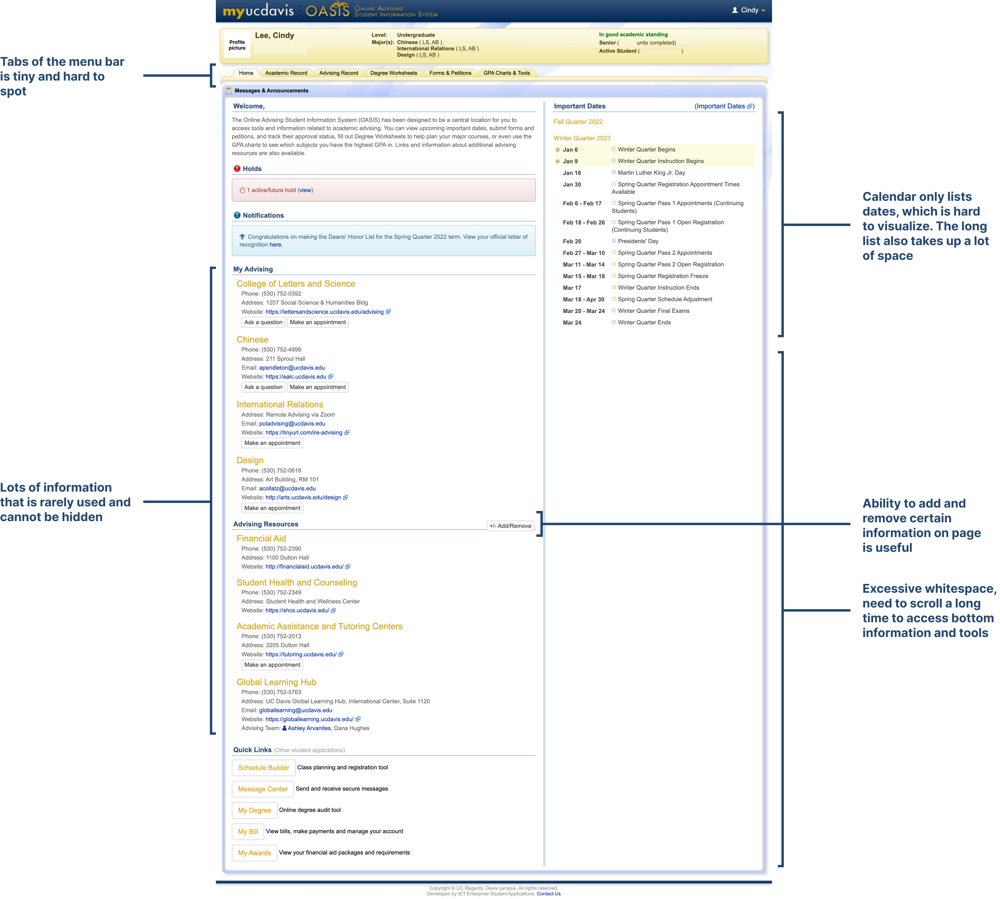
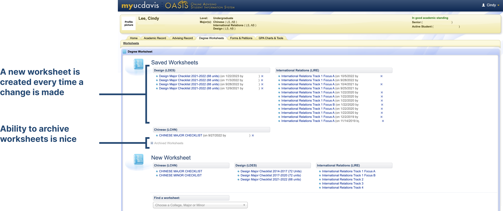
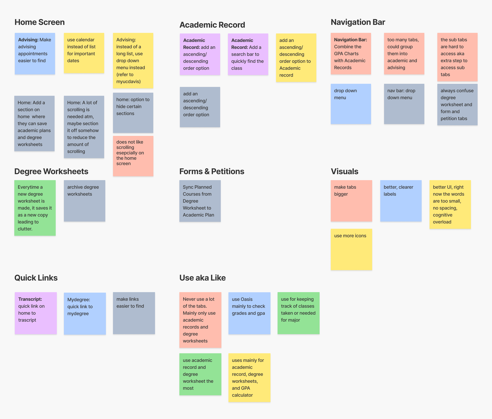
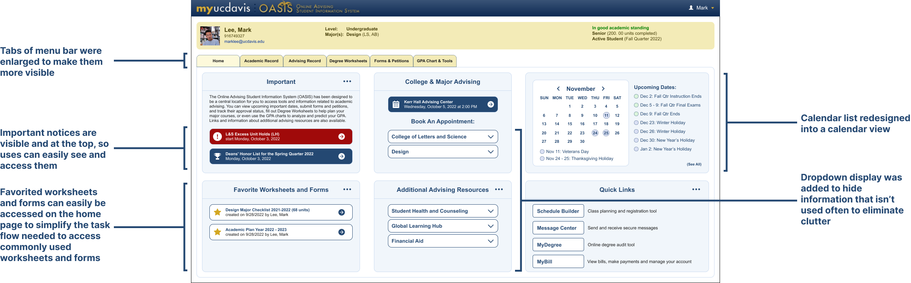
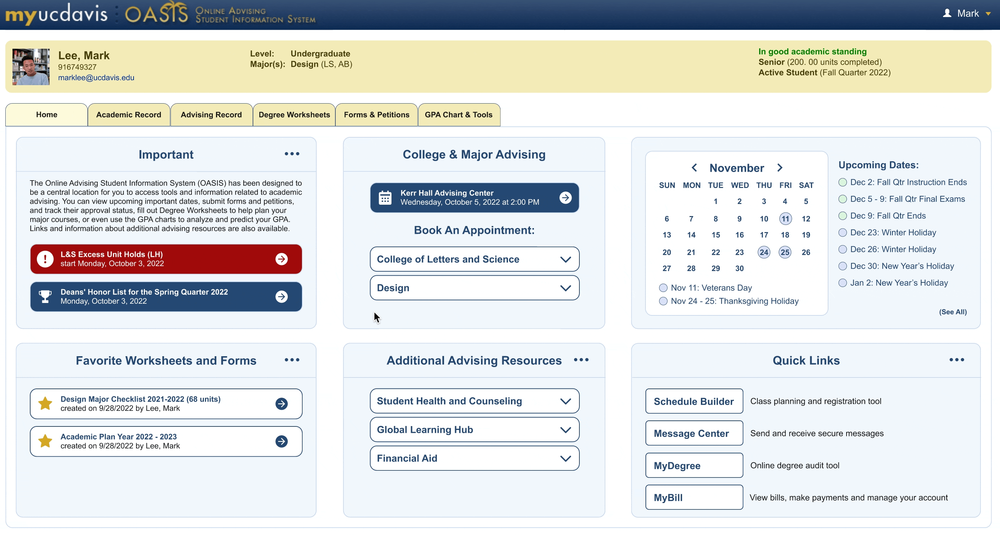
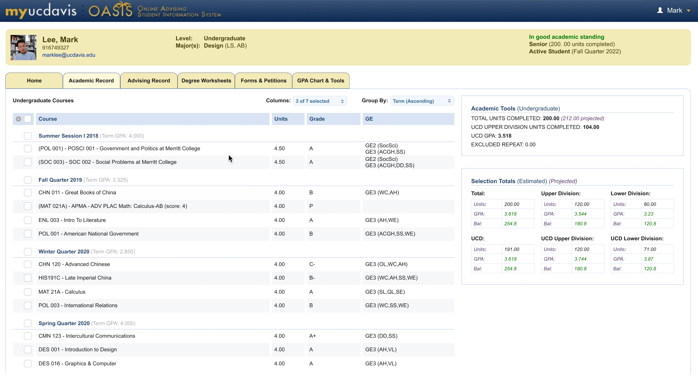

Overview
Oasis is an online Student Advising site for UC Davis to submit major change requests, look at their transcripts, monitor their academic performance, and more. However, the numerous tools that the platform has available makes using it to its full extent difficult.
Role
UI/UX Design, UX Research
Duration
3 days
Sept 30, 2022 - Oct 2, 2022
Tools
Figma
UNDERSTANDING: LITERATURE REVIEW
Current Oasis Website
To better understand the product I was redesigning, I analyzed a few pages of Oasis and recorded my observations.
 USER RESEARCH: SURVEY
Hearing From Students
To learn more about the users, I interviewed 6 UC Davis students and had them share their experience using Oasis. After gathering their responses, I categorized their feedback using an affinity map.
IDEATION
Pain Points and Solutions
From our affinity map, we developed four main pain points and began to ideate solutions for each pain point.
01
01
Only Use A Few Features
Most users reported that they only use Oasis for a few key features such as "Academic Records" and "Degree Worksheets" and rarely utilize any of the other features. However, these features are mixed in with the sea of other features making it inconvenient to access.

Solution: Redesign Most Used Features and Home Edit Feature
Since time was limited, I chose to focus only on redesigning commonly used pages such as the "Home" page, “Academic Records”, and “Degree Worksheets”. On the Home Page, an edit option will be added to give users the ability to edit what they want to display in each section for a more personal, customizable experience and to further eliminate clutter.

02
02
Home Screen's Excessive Scrolling and Whitespace
Users shared that they dislike having to scroll so far down on the home screen to access certain features, which makes it time-consuming and hard to find important tools. In addition, they do not understand why there is so much whitespace on the home page.

Solution: Minimize Sections and Eliminate Whitespace
I will use different components to better display information and the goal is to eliminate the need for scrolling. For example, dropdown displays will be used to hide information that the user won’t access often. Unnecessary whitespace will also eliminated. A calendar view will be used instead of a list view to improve the viewing experience for the user.

03
03
More Sorting Options for Academic Record Page
Users expressed that they wanted more sorting options for academic records, especially the ability to sort in descending order to avoid scrolling.

Solution: Added More Sorting Options For Academic Record
I will add the option to sort in descending order to avoid scrolling to find most recent courses, as well as, the option to pick certain courses (i.e. all courses, UCD courses, non-UCD courses).

04
04
Ability To Save Favorite Links
Since users often use Oasis to access a couple of their most frequented links, they expressed wanted an option to quickly access these links.ferent platforms resulting in a scattered experience.

Solution: Favorite Links Section
A section will be added on the Home page for users to quickly access their favorite worksheets and forms to further streamline the task flow.

LO-FI WIREFRAMES
Sketching Ideas
I began to visualize my solutions through low-fidelity wireframes, and I focused on the layout of the Home screen.
HI-FI PROTOTYPE
Helping Students Stay Organized
Home Screen
The Home screen was redesigned to eliminate unnecessary whitespace and the need for scrolling so users can see everything they need at a glance.
Personalize Home Screen
To give users more control on what to display on their Home screen, users can click the more icon to add or remove certain information.
Degree Worksheets
Users commonly use Oasis to access degree worksheets and academic plan forms, so I added a section on the Home page to add and access their favorite worksheets and forms, as opposed to clicking on the "Degree Worksheets" tab and searching for them in the original design.
More Filters For Academic Record
One of the most requested features was the ability to sort all courses in descending order to eliminate the need to scroll all the way to the bottom of the page to look at their latest courses, so that sorting feature was added as an option.
Another option to sort by UC Davis courses and non-UC Davis courses was also added.
CONCLUSION
Takeaways
When I showed my design to a user for feedback, they questioned a lot of my design decisions. My responses were not as well articulated as they could have been. My biggest takeaway is to practice articulating all of my design decisions thoroughly before showing them to users for feedback.
CONCLUSION
Next Steps
Given more time, I would like to do the following:
- I would like to redesign other features of Oasis based on the user feedback I gathered, especially the “Degree Worksheet” and “GPA Chart & Tools” since they are commonly used features.
- I would also like to find a way to consolidate some of the features since users have expressed that a lot of the features feel repetitive and divided. Specifically, I would like to find a way to consolidate Academic Record with GPA Charts & Tools since they both have GPA testing options.
- Test redesign with users
- Conduct some A/B testing to test different layouts